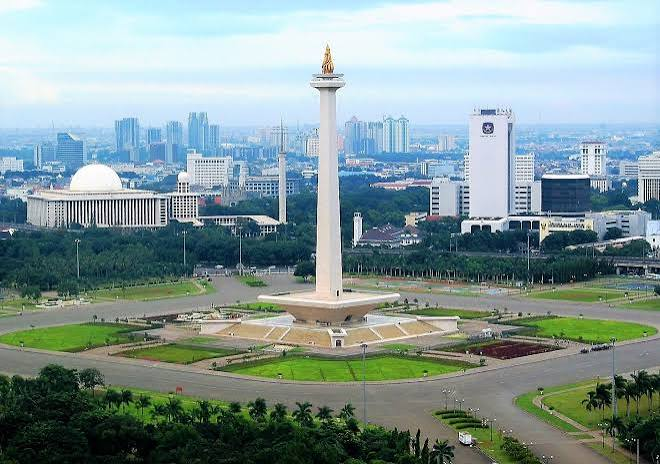

Sejarah

Sejarah Jakarta bermula dari Sunda Kelapa, pelabuhan dagang Kerajaan Sunda pada abad ke-14. Pada 22 Juni 1527, Pangeran Fatahillah merebutnya dari Portugis dan mengubah namanya menjadi Jayakarta yang bermakna "Kota Kemenangan", yang kini diperingati sebagai hari jadi kota. Pada tahun 1619, Belanda di bawah VOC menghancurkan Jayakarta dan mendirikan Batavia, yang menjadi pusat pemerintahan kolonial selama tiga abad. Nama kota ini sempat diubah menjadi Jakarta Tokubetsu Shi oleh Jepang pada tahun 1942, hingga akhirnya resmi menyandang nama Jakarta sebagai ibu kota setelah Proklamasi Kemerdekaan Indonesia tahun 1945.
Geografis

Jakarta terletak di pesisir barat laut Pulau Jawa, tepatnya antara koordinat 6°12′–6°22′ Lintang Selatan dan 106°44′–106°58′ Bujur Timur, dengan luas daratan mencapai 661,52 km² serta wilayah lautan seluas 6.997,50 km². Wilayah strategis ini berbatasan langsung dengan Laut Jawa di sebelah utara, Provinsi Jawa Barat (Kota Bekasi, Kota Depok, dan Kabupaten Bogor) di sebelah timur dan selatan, serta Provinsi Banten (Kota Tangerang dan Tangerang Selatan) di sebelah barat. Secara administratif, ibu kota ini terbagi menjadi 5 kota administrasi yang berada di daratan utama dan 1 kabupaten administratif berupa gugusan Kepulauan Seribu di kawasan perairan utara.
Secara topografi, Jakarta merupakan dataran rendah yang sangat landai dengan ketinggian rata-rata hanya 7 meter di atas permukaan laut, di mana wilayah selatannya cenderung berbukit sedangkan wilayah utaranya berada di bawah permukaan laut saat pasang. Kondisi morfologi yang menyerupai cekungan ini dilalui oleh 13 sungai utama, termasuk Sungai Ciliwung, yang mengalir dari dataran tinggi Bogor menuju Laut Jawa. Karakteristik geografis ini, dikombinasikan dengan iklim tropis yang memiliki curah hujan tinggi, membuat Jakarta sangat rentan terhadap permasalahan hidrologi seperti banjir musiman dan penurunan permukaan tanah.
Wisata
Sebagai kota metropolitan, Jakarta memiliki beragam tujuan wisata utama, mulai dari situs bersejarah, taman hiburan terpadu, hingga pusat perbelanjaan modern yang menarik minat wisatawan domestik maupun mancanegara.
Monumen Nasional (Monas)

Monumen Nasional adalah ikon kebanggaan kota Jakarta sekaligus simbol perjuangan bangsa Indonesia. Pengunjung dapat menggunakan fasilitas lift untuk mencapai pelataran puncak tugu dan menikmati pemandangan kota dari ketinggian. Selain itu, bagian dasar monumen ini difungsikan sebagai museum sejarah nasional yang menyimpan berbagai diorama sejarah Indonesia.
Kota Tua Jakarta

Kawasan Kota Tua Jakarta, yang dahulu dikenal sebagai Batavia Lama, merupakan pusat sejarah peninggalan masa kolonial Belanda. Pengunjung dapat menikmati suasana klasik dengan deretan bangunan bersejarah berarsitektur Eropa, bersepeda ontel di sekitar Taman Fatahillah, serta mengunjungi berbagai museum edukatif seperti Museum Sejarah Jakarta (Museum Fatahillah), Museum Wayang, dan Museum Bank Indonesia.